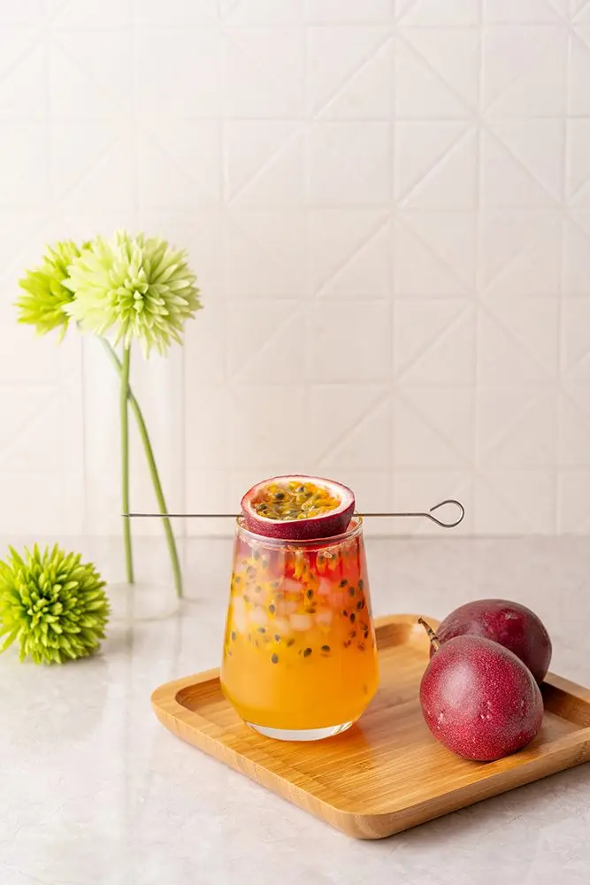

文章 / 飲品配方與資訊
Spring of Colours – Let’s make ombre passion fruit punch!
這篇是英文原文，尚未完成繁體中文翻譯。中文選單與相關商品連結不會切回英文介面。

查看英文原文（尚未翻譯）
While Japan might have taken the spotlight with its blooming sakura blossoms, that’s not all for springtime flower-viewing! Everywhere from parks to gardens are a symphony of vibrant colours, as tulips, daffodils, bluebells and primroses show off their beauty in the crisp springtime air.
Want to set up a garden picnic or a night’s out with your friends? Colourful drinks are the perfect choice for the occasion! With our ombre powder, you can easily whip up a batch for your admiring guests.
Check it out!

Our Ombre powder
This powder is no ordinary powder – it’s the key to the ombre drink’s magical colour-changing effect! Once mixed into a liquid the powder changes colours depending on the drink’s acidity.
Neutral
When added to a neutral base (such as distilled water), the powder turns into a luxurious shade of purple – your first step in crafting your colourful cocktails!
Sour
Once you add the powder to a sour base (such as fruit juices), the mixture turns into a brilliant orange-red. This passionate colour matches the drink’s sharp tang perfectly!
Alkaline
Finally, when you add the powder to an alkaline base (such as milk), the colour turns into a brilliant blue. Perfect for an ocean-themed drink, or to recreate the nighttime sky with a dash of glitter!
With this unique colour-changing effect, the possibilities are endless for this powder! Here’s something to get you started:

Ombre passion fruit punch
With its firey-red colour and mix of sweet, tangy flavours, this fruit punch is as passionate as it sounds! The crystal boba adds an extra layer of crunchiness too!
What you’ll need
How to make
Mix the passion fruit juice syrup with water, then add some fructose to sweeten the mixture
Stir in the powder, the drink should start to turn red
Add the ice cubes, then add the crystal boba. Enjoy!
PS. for better results, garnish with passion fruit pieces!
Get started!
Can’t wait to show off your colourful creations to your family and friends? Pick up your ombre powder and starting mixing!